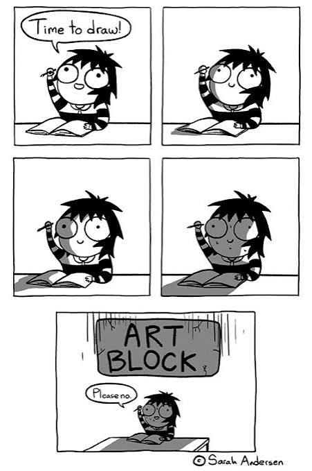

Art Block Sucks
Having an art block can be frustrating and demoralizing. The will to create is there, but for some reason, you just can't seem to get your pencil moving. You sit there for hours just staring at a blank canvas. You feel stuck and unable to make progress. Sounds familiar, right? Art blocks are a common experience for many artists, and it's important to remember that they are temporary. The key is to keep pushing forward, even when it feels difficult.
Art blocks can be caused by a variety of factors, including stress, burnout, lack of inspiration, or even self-doubt. It's important to identify the root cause of your art block so that you can address it effectively. Sometimes, taking a break and stepping away from your work can help clear your mind and reignite your creativity. Other times, seeking inspiration from other artists or trying new techniques can help you break through the block.

What to Do About It
When you're facing an art block, here are some strategies that can help:
- Take a break and step away from your work for a while.
- Try a new technique or medium to spark creativity.
- Seek inspiration from other artists or sources.
- Set small, achievable goals to build momentum.
Remember, art blocks are a normal part of the creative process. Be patient with yourself and keep experimenting until you find what works for you.
Maintaining Consistency
Consistency in your artistic practice is key to making progress and developing your skills. Here are some tips for maintaining consistency:
- Set aside dedicated time for your art practice each day or week.
- Keep a sketchbook or journal to document your ideas and progress.
- Join an art community or find a creative partner to hold you accountable.
- Track your goals and celebrate small victories along the way.
By maintaining consistency, you'll be able to overcome art blocks more easily and continue to grow as an artist. Remember, the journey of creativity is filled with ups and downs, but persistence and dedication will lead to success.